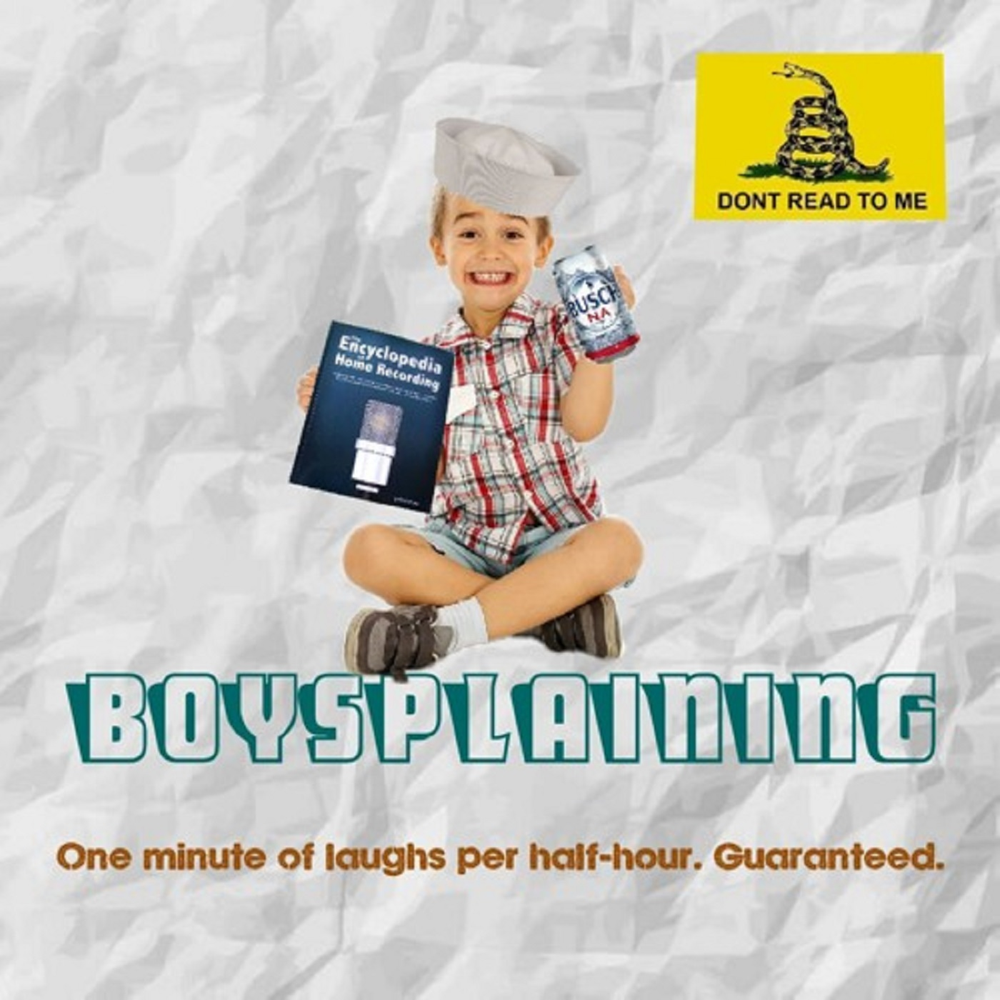

I made up the term #Bossplaining. Or thought I did. Turns out it's already a thing.The one thing I learned in my university education, the one thing that excited me, was the need for people to exercise real effort in understanding each other. The language we use is so full of shades of meaning and we're such emotional creatures – particularly when we're arguing. Johnathan Haight has popularised lots of the evidence of the truth of Hume's claim that our reason is the slave to our passions.
There's something funny about the commentary in this thread about aggressive debate in economics faculties. It's recently acquired a gender politics dimension and the first commenter – a male economist confesses to misreading the motives of the piece assuming the author was a man. Thinking he is dealing with one kind of meaning making – in which someone is right and the other wrong – he encounters another.
Anyway, like my gradual disenchantment with almost all political debate, which I see as simply the thin artefact of the rituals of competition, where words mean less and less (and are chosen for that purpose) with everything in the body language (the body language of an argument – ha ha) I'm pretty disenchanted with aggressive argument itself. I've never seen it turn up much, though I guess it could when the argument is about things that are sufficiently formal that there really is a right and wrong answer. Even then though, argument should be direct, but not aggressive as it's less efficient that way.
Compete if you must – it's not only natural but it's good up to a point. It tests ideas. But even if one side wins, there's usually quite a lot to be gained by looking at the perspective of others. This came to mind when reading this terrific piece by Kevin Kelly. He's fantastic to read – such a powerful, curious intellect. That's one reason why he's not in the footnote chase of academia of course. Anyway, he disagrees with Robert Gordon. I've not read Gordon, but he's certainly a well regarded economist. An A leaguer.
If I had to guess who's going to be proven right, I think maybe Kelly will be, but who knows? Certainly Gordon looks to be right about all the panic about robots coming for our jobs – at least for now. It's future gazing so a very difficult call. Both sides have a good case to make. What's shocking is how juvenile Gordon's response is. The lack of graciousness is unfortunate, but the lack of curiosity is unforgivable. Rather than explore the issues, elaborate on where he thinks the weaker parts of his thesis are, or take up some of the fertile threads Kelly weaves through his piece, Gordon is in high school debating mode. He's right and Kelly's wrong. Note how, in this style the antagonist defines the terms – making the debate about his contribution – and any deviation from those terms results from their opponent's foolishness or knavery.
What a tragedy that academia is so often policed by people of such desicated, reductive sensibility as Gordon. I've been reading recently about the foundation of the internet and it was populated by such clever and curious people with a passion for humanity – seriously, it's amazing how many of them had a human vision for computers – how much they anticipated the 'social turn' that IT took at the turn of the millennium, though that's now being set upon by various dystopian forces.
I once heard Amartya Sen say he was asked why he keeps repeating his messages. His answer was that there was no change, so he repeats the message. I think there is something to be said for focusing on 2 or 3 key arguments and keep repeating and refining your argument (taking account of criticism and modifying as appropriate).
Warren Buffet is said to recommend focussing on our top 3 goals in life. What about the other goals? Stay away from them, as they will distract from the top 3. So carefully choose the top 3 arguments that we think really matter, and don’t get distracted by other matters.
Your point?
not giving in an inch is the logic of territorial battles. Gordon is just signalling that he is a territorial warrior, as most big names in economics nowadays are. That inquisitive and pedantic attitude wins in the battle for space. Anything else simply means one is giving up space. You have no space so its easy for you to argue others should not care so much about it. Yet you too like to quote and speak to 'greats', who almost invariably are men that won territorial debates. So indirectly you too feed the beast. Hard not to, to be honest.
You get more openness when the game is expansion: when growing, one wants new ideas and new people to join a cause because one needs their help to win a territory. That is why the start of new big things, like the internet, is characterised by inquisitiveness. If you like, increasing rudeness and seeming stupidity is simply a sign of growth opportunities running out and the 'normal' battle for territory asserting itself. Buffet is a territorial animal so tells others how to grab and maintain territory, essentially by telling them not aim for more territory than they can defend. A very dull way to live, but highly effective.
You yourself remarked this to me in 2004 when i was talking in the 'Gruen lecture' about how status-seeking meant that economic growth had little benefit to happiness. You then said, which I in hindsight agree with, that fixed-pie politics is brutal and that we hence needed a growth orientation to keep things civil. An age of civility in debate is an age of growth and mutual need. Quite right. Remember your own insights :-)
Thanks Paul,
The thing about my 'insights' is that where I make a generalisation like the one you've outlined, I offer it as one angle on an issue – what Hegel called a 'moment' in the image of mechanics – not the whole truth. As for 'greats' there's no doubt some ego gratification and also utility in consorting with greats to get my ideas about. But:
I know and I agree with your choices. It enriches life to look for meaningful deliberation that takes things forward, that expand our knowledge and insights. It gives a tremendous sense of freedom and allows one to live more fully.
What I am reminding you of is the inevitable cost that comes with not playing the territorial game as much as you could have played it. You can have real deliberation and hence growth and passion, or you can have a recognisable territory with everything that comes with that. But you cannot have both and there is no point complaining about the behaviour (boysplaining) of the territorial crowd. They have made their choices and, understandably, crow from their roost. That is what they have worked hard for and are of course bragging to others, as they will to themselves. But they are also caught in their territories, condemned to fight battles over every inch, slaves to their patch. As you cannot get in, they cannot get out. I think you have the better life and shouldn't complain about not being let in. You should be glad of that, not angry.
Indeed as Phillip Guston said of his ( vicious) Art academy critics " jeez , what if they liked me?"
Yes, that's all very well Paul. I don't disagree with any of that.
But having thought about that a little more, I still don't really agree with your tone. Yes it's quite likely that for reasons both Darwin and Larmark could explain, those at the top of the tree are more likely to be territorial and all the rest of it. There's still critiquing to be done for at least these reasons.
1) The tendency, if tendency it is is still only a tendency. Moralising about stuff is one person's or a culture's attempt to have their influence on a situation. Different high fliers are territorial to different degrees so moralising swings more social rewards in the direction of the people I want to.
2) Even if there were no variation, the same effect should apply to all – a small influence, which if more take it up has a greater chance to take hold.
3) We get better science from better discussion. It's an ethical value to pursue better discussion and the main way one does that is by stating and arguing for one's criteria of what a good discussion is and by modelling it.
But yes, the world is the world.
fair enough, social voting has its role. Though one can argue its more productive and fun to simply show the joys and fruits of deliberation and freedom of thought. Different tree, different top.
Is "the body language of an argument" your own coinage? Because it captures a concept that English doesn't really have a phrase for.
Daniel Dennett on being a critical commentator:
Just how charitable are you supposed to be when criticising the views of an opponent? If there are obvious contradictions in the opponent's case, then you should point them out, forcefully. If there are somewhat hidden contradictions, you should carefully expose them to view – and then dump on them. But the search for hidden contradictions often crosses the line into nitpicking, sea-lawyering and outright parody. The thrill of the chase and the conviction that your opponent has to be harbouring a confusion somewhere encourages uncharitable interpretation, which gives you an easy target to attack.
But such easy targets are typically irrelevant to the real issues at stake and simply waste everybody's time and patience, even if they give amusement to your supporters. The best antidote I know for this tendency to caricature one's opponent is a list of rules promulgated many years ago by social psychologist and game theorist Anatol Rapoport.
How to compose a successful critical commentary:
1. Attempt to re-express your target's position so clearly, vividly and fairly that your target says: "Thanks, I wish I'd thought of putting it that way."
2. List any points of agreement (especially if they are not matters of general or widespread agreement).
3. Mention anything you have learned from your target.
4. Only then are you permitted to say so much as a word of rebuttal or criticism.
One immediate effect of following these rules is that your targets will be a receptive audience for your criticism: you have already shown that you understand their positions as well as they do, and have demonstrated good judgment (you agree with them on some important matters and have even been persuaded by something they said).
Dennett, Daniel C. 2013. Intuition Pumps and Other Tools for Thinking (Penguin edition 2014, pp33-34)
Thanks Simon, Amen!
Yes, it's mine.
I guess the Germans would have a term for it wouldn’t they? ;)